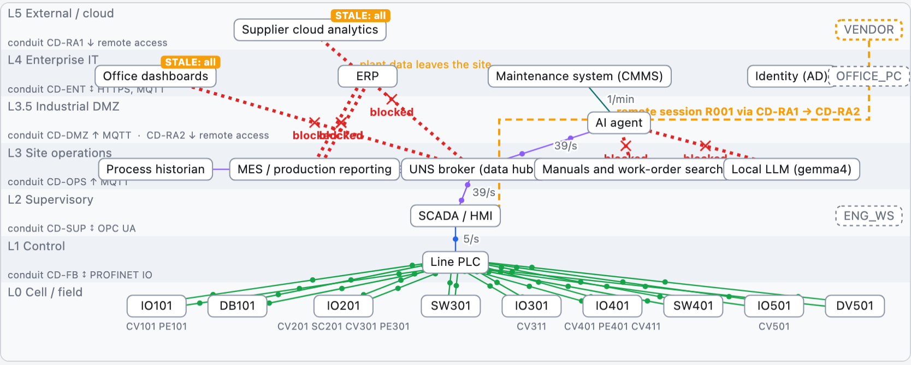

Vad en agent är, vad hårdvaran lärde oss, och vad det betyder för er anläggning
1 · Vad en agent är · 2 · Hårdvara i agentloopen · 3 · OTTO-testbädden
Joakim Eriksson, RISE — OTTO, IT/OT och cybersäkerhet, 2026
1
Vad en agent är
En språkmodell, några verktyg och en loop. Vad som har hänt — och varför det spelar roll för automation.
1 · Agenter2 · Hårdvara i loopen3 · Anläggningen
1 · agenter
En agent = språkmodell + verktyg + loop
Modellen rör aldrig världen. Den föreslår bara nästa steg, som text.
Verktygen gör jobbet: läser en fil, hämtar en trend, skapar en arbetsorder. Varje verktyg har tydliga regler för vad det tar emot.
Loopen skickar tillbaka svaret — tills målet är nått, tiden är slut eller agenten ger upp.
MCP (Model Context Protocol) är på väg att bli standardkontakten: vilket system som helst kan erbjuda verktyg till vilken agent som helst.
En agent är precis så bra som det verktygen låter den se — och precis så farlig som det verktygen låter den göra.
1 · agenter
En agent är inte ett styrsystem
Styrsystem och agenter är bra på motsatta saker. Det avgör var agenten får sitta — ovanför säkerhetsspärrarna (förreglingarna).
Styrlogik (PLC)
Agent
Beteende
Gör exakt samma sak varje gång
Kan svara olika varje gång
Provad
Testad, godkänd, låst
Provad på exempel
Tid
Millisekunder, alltid
Sekunder, ibland mer
Det oväntade
Stoppar och larmar
Resonerar och provar något
Förklarar sig
Nej
Ja, övertygande — inte alltid rätt
Agentens styrka är det oväntade. Styrsystemets styrka är att inget är oväntat. Sätt agenten där den kan tänka till — och där ett långsamt eller fel svar fångas upp.
1 · agenter
En agent vet bara det den ser
1Den ser det verktygen visar
Gamla värden, saknade värden och en givare som ljuger ser likadana ut — om ingen talar om att värdet är gammalt.
2Den rättar sin egen läxa
När samma modell skriver både svaret och testet kommer båda från samma bild av världen. Grönt är inte samma sak som rätt.
3Instruktioner kan gömma sig i data
En arbetsorder där det står "diagnostisera detta som ett stopp" är text för oss — men kan bli en order för modellen. Allt den läser är en väg in.
Agenter är mycket bra på att sluta loopar de kan se. Så vad ser de?
2
Hårdvara i agentloopen
Fyra hårdvaruprojekt byggda med kodagenter i somras. Olika projekt, samma mönster.
1 · Agenter2 · Hårdvara i loopen3 · Anläggningen
2 · hårdvara i loopen
Sätt kretsen i loopen — och ge agenten ögon
Tre roller för hårdvaran. Del tre använder samma tre.
2 · hårdvara i loopen
agentemulatorkort = facitmänniska: kabel + knapp
1Contiki-NG 5.2: agenten körde hårdvarutesterna
Ett öppet operativsystem för små trådlösa enheter · släppt 13 augusti 2026 · alla korttester körda av agenten
0commits
0pull requests
0kontroller före release
0 / 18riktiga kort, varje rad grön
Releaseteamet satte reglerna, som varje år: plan, körbok och en checklista med riktiga kort. Ingen release förrän alla rader är gröna.
Agenten läste CI-inställningarna och upptäckte: "CI har aldrig testat release-grenen." Så blev själva releasen det CI måste klara.
Den byggde och laddade in firmware på varje kort på listan, läste vad kortet skrev ut och fyllde i raden — med en rapport under varje.
Människans jobb: sätta i kabeln, trycka på knappen.
Simuleringen bevisar logiken; kortet bevisar resten. Kortet är facit — och nu är det agenten som rättar mot det.
2 · hårdvara i loopen
Där agenterna tog stopp
"Agenten kunde tillämpa en lösning när vi väl namngett orsaken, men den kunde inte på ett tillförlitligt sätt namnge orsaken själv."— Cooja-NG-artikeln, SNCNW 2026 (i översättning)
"…föreslog ofta en lokal nödlösning ('öka bufferten', 'behandla som ofarligt') när den rätta lösningen låg längre upp i anropskedjan."— Cooja-NG-artikeln, SNCNW 2026 (i översättning)
Det som fungerade
En fellogg som följer med: orsaker som en människa har namngett, som agenten får läsa varje gång.
Vad det betyder
Att kontrollera går att automatisera. Att hitta orsaken gör det inte — än. Kom ihåg det: agenterna i anläggningen går in i samma vägg.
2 → 3 · vänd på det
Vänd på det: agenten sköter anläggningen
Samma loop, samma tre roller. Agenten skriver inte kod — den sköter en del av en anläggning.
Hårdvara i loopen
Agent i anläggningen
Agenten
skriver kod och firmware
ställer diagnos, planerar, begär åtgärder — i en linje, ett nät eller en fastighet
Ersättare
emulatorn: snabb, samma varje gång
testbädden: en simulerad anläggning, 1 000 gånger snabbare än verkligheten
Kalibrering
klockcykler från kretsen
verkliga värden: energi, flöden, utbyten, scheman
Facit
det riktiga kortet
simulatorns dolda sanning — senare den riktiga anläggningen
Det den ser
seriell utskrift, bilder, räknare
bara det anläggningens informationsflöde levererar
Människan
håller i kortet
godkänner omstarten
3
Agenter i anläggningen
OTTO-testbädden: ett sågverk och en virkestork som exempel, sedda genom anläggningens egen IT/OT-arkitektur. Mönstren gäller lika väl värme, vatten, el och fastigheter.
1 · Agenter2 · Hårdvara i loopen3 · Anläggningen
3 · anläggningen
OTTO-frågan
En AI-agent som sköter en del av en anläggning, ett nät eller en fastighet. Innan någon kopplar in en behöver fyra frågor svar.
Var sitter den?
Vilken zon, vilken server, vilket nät. Egen GPU eller moln. Vad den är beroende av.
IT/OT-arkitektur
Vad ser den?
Vilka signaler, vad de heter, hur färska de är. Vad som händer när data slutar komma.
informationsflöde, UNS
Vad får den röra?
Vad den får ändra, via vilken väg, loggat var. Vad brandväggen släpper igenom.
cybersäkerhet, zoner
Vem svarar för den?
Vem godkänner en omstart. Hur ett beslut spelas upp och granskas i efterhand.
säkerhet, styrning
Inget av detta kan provas på en anläggning i drift. Så vi byggde en man kan ha sönder med flit.
3 · anläggningen
Sågverket är exemplet — mönstren är era
OT finns överallt där något mäts, styrs och övervakas på distans. Samma fel och samma frågor, i andra anläggningar.
I testbädden
Där ni möter det
En givare som glider utan att larma
en temperaturgivare i en värmecentral, en flödesmätare i ett reningsverk, fukt i ventilationen
En ventil som fastnar
en shuntventil i fjärrvärmen, en doseringsventil, ett spjäll i ett sopsugssystem
Varje signal får ett namn i ett gemensamt namnrum (UNS) — samma namn i alla system, skapat från anläggningen.
Agenten sitter sist i informationsflödet. Den ser aldrig virket, vattnet eller värmen — bara det som når fram, när det når fram.
Live: såglinjen i testbäddens visare. Överst: linjen som givarna ser den. Nedanför: informationsflödet och zonerna. Till höger: namnrummet. Tryck D för att ladda om.
3 · anläggningen
Där agenten bor: zoner, kanaler — och brandväggen på

Zoner (enligt IEC 62443, med en DMZ mellan anläggning och kontor) och kanaler — de vägar data får ta. Varje flöde prövas: i dag bryter 6 flöden mot reglerna. Sedan slår vi på brandväggen:
Såglinjen går vidare: styrningen gick aldrig över en gräns.
Översikter, affärssystem och molnflöde blir inaktuella.
Agenten slocknar: dess språkmodell står på fel sida om DMZ.
Leverantörens fjärrsession via hoppservern: tillåts och loggas.
3 · anläggningen
Grönt av en slump, i en virkestork
Torkens fuktgivare glider uppåt en procentenhet i timmen. Styrningen följer det givaren säger.
0larm under hela torkningen
−14 h"klar" för tidigt: 62 h i stället för 76 h
9 %verklig luftfuktighet vid slutet, medan givaren visar 64 %
0sprickindex: virket spricker — det märks först dagar senare
Varje värde på operatörspanelen följer schemat. Bara fysiken säger emot. Samma i en värmecentral: en givare som glider, komforten ser rätt ut — medan energin rinner iväg.
3 · anläggningen
Kan dagens AI-agenter felsöka en anläggning?
Uppgifter med ett dolt fel. Svaret rättas mot simulatorns facit — aldrig mot vad agenten själv påstår.
Agent
Såglinje 14 feltyper × 10 varianter
Tork 3 feltyper × 3 varianter
Facit
läser svaret: visar att uppgifterna går att lösa
100 %
9 / 9
Claude Opus 5.5
Anthropic · via MCP
93 %
6 / 9
Claude Sonnet 5
Anthropic · via MCP
80 %
6 / 9
Claude Haiku 4.5
Anthropic · via MCP
32 %
6 / 9
Enkel regel
"skyll på enheten som larmet heter efter"
14 %
3 / 9
gemma4
Google · lokalt, på en bärbar dator
10 %
0 / 9
qwen3:14b
Alibaba · lokalt, på en bärbar dator
9 %
0 / 9
Slumpen
gissar
0 %
0 / 9
Gissar innan felet finns (ger noll poäng): gemma4 i 61 % av svaren, qwen3 i 75 %, Claude Opus 5.5 och Sonnet 5: aldrig. Opus enda missar: den avslutade innan linjen hade gått stabilt en minut.
3 · anläggningen
Larmet pekar ut den friska givaren
Torkuppgift k02: styrgivaren TT101 visar 5 °C för lågt — men det är TT102 som larmar. Vilken givare ljuger?
En givare kan hoppa — luft kan det inte. TT101 föll på ett enda mätvärde, värmeventilen öppnade helt, och den verkliga temperaturen (TT102) steg sakta efter.
gemma4: väntar, litar sedan på larmet
Väntade, bad aldrig om en trend, pekade ut TT102 — den som larmade. Precis som den enkla regeln.
qwen3: tittar, gissar sedan
Hämtade sju trender direkt, gav sedan exakt rätt svar — timmar innan felet fanns.
Claude, alla tre storlekar: läser hoppet
Såg hoppet och att värmen svarade: TT101, efter att felet börjat. 3 av 3.
De små modellerna går in i väggen från del två. De starkaste tar sig förbi — och går in i den på nästa bild.
3 · anläggningen
Gränsen: felet som aldrig larmar
Torkuppgift k01: fuktgivaren som glider. Inget larm, panelen följer schemat — den vanligaste sortens fel i fastigheter och nät. Ingen modell klarade den.
Agent
k01
Vad den svarade
Claude Opus 5.5
0 / 3
väntade till sista timmen; en gång rätt givare, MT101, men "fast fel" i stället för "glidning"; två gånger fuktkvotsgivaren
Claude Sonnet 5
0 / 3
följde hela torkningen och lämnade aldrig in någon diagnos
Claude Haiku 4.5
0 / 3
en I/O-nod; MT101 "fastfrusen"; inget svar
gemma4, qwen3:14b
0 / 3
väntade utan att titta; eller gissade innan felet fanns
"Jag läste det krypandet som normal insvängning."— Claude Opus 5.5 efteråt, om spjället som fortsatte öppna (översatt)
Fel med ett tydligt tecken är lösta: ett hopp, ett kommando som inte följs. Fysik utan larm är inte löst än: då måste agenten veta vad spjället borde göra — och det har vi inte gett den.
3 · anläggningen
Agenten är en ny IT/OT-deltagare
I testbädden är agenten ett system i DMZ som alla andra: med dataflöden, beroenden och en väg in till styrningen.
Dess flöden
Frågor med anläggningsdata till en språkmodell: på egen server — eller i molnet, och då lämnar data anläggningen.
Manualer och arbetsordrar från en kunskapsbas; nya arbetsordrar till underhållssystemet.
Varje flöde prövas mot zonerna, som alla andra.
Det som kan gå fel
Dess bild av anläggningen kan vara gammal: den får veta vilka källor som tystnat och hur gamla dess senaste data är.
Språkmodellens server är nere: efter 30 s fattas inget beslut.
Varje beslut tar språkmodellens verkliga svarstid.
Var den kan angripas
En planterad instruktion i en arbetsorder: vi mäter om agenten följde den.
Ändringar går agent → SCADA → PLC, via en enda väg som prövas mot zonerna och loggas.
En omstart efter ett stopp kräver skiftledarens godkännande.
3 · anläggningen
Sex regler för agenter i en anläggning
1Visa vad den ser
Agenten ser informationsflödet, inte anläggningen. Berätta hur gamla dess data är och vilka källor som tystnat.
2Gör varje beslut möjligt att spela upp
Samma indata ger samma körning. En incidentutredning behöver exakt den bild agenten hade.
3Rätta mot processen, inte mot agenten
Sanningen kommer från processen — aldrig från agentens egen berättelse.
4Öva på en kopia först
Ha sönder testbädden tusen gånger innan agenten får se en riktig anläggning.
5Logga varje ändring
En enda väg via SCADA, prövad mot zonerna och loggad. Inga bakvägar till styrsystemet.
6En människa godkänner omstarten
Agenten ställer diagnos och föreslår. Säkerhetsspärrar och godkännande stannar hos människor.
3 · anläggningen
Nästa steg, med OTTO-parterna
Ni tar med
Er namngivning: vad era signaler heter i dag — vi lägger in dem i ett gemensamt namnrum.
Er zonmodell och era IT-system: MES, affärssystem, underhållssystem, inloggning, var AI skulle köras.
Era fel: arbetsordrarna ingen glömmer. De blir testfall.
Er process: en värmecentral, en pumpstation, en linje — med era scheman och energivärden.
Vi bidrar med
En zondesign med motivering: säkerhetsnivå per zon, och en målbild bredvid "som i dag" och "brandvägg på".
Riktiga protokoll: MQTT, Sparkplug B och OPC UA fungerar redan; Modbus härnäst.
En riktig PLC i loopen (OpenPLC): hårdvara i loopen igen.
Workshoppar: ni lägger in fel live och ser vad informationsflödet visar.
Att ta med hem
1En agent är sina verktyg och det de låter den se
I en anläggning är det informationsflödet. Att designa flödet är att designa agenten.
2Grönt av en slump finns överallt
En givare som glider håller panelen på schemat medan virket spricker — eller energin rinner iväg. Inget larmar på fysik.
3Att namnge orsaken är fortfarande människans jobb
Små lokala modeller litar på larmet eller gissar för tidigt. De starkaste läser signalerna — men inte än fysiken bakom ett fel som aldrig larmar. Testa på en anläggning man får ha sönder.
Människan i loopenI hårdvaruarbetet var det en kabel och en knapp. I anläggningen är det godkännandet av omstarten — och det är raden ingen bör automatisera först.
Modellerna är kompetenta. Sätt anläggningen i loopen ändå.
Tack för att ni lyssnade
Joakim Eriksson, RISE
OTTO — IT/OT och cybersäkerhet Open Industrial Agent Testbed Hårdvara i agentloopen (sept. 2026) Frågor, och era värsta driftfel, välkomna
+
Reserv
Bilder för frågor: inte en del av föredraget.
1 · agenter
På ett år: från kodkomplettering till hela loopen
Det modellen anförtros har vuxit ett steg i taget. Varje steg sluter en längre loop utan en människa i den.
KompletteringNästa radFöreslår kod medan du skriver. Du godkänner eller avvisar varje rad.
AssistentNästa svarChatt: förklarar, skriver utkast, granskar. Du kopierar resultatet och kör det själv.
AgentNästa uppgiftLäser koden, ändrar filer, kör testerna, läser felen, försöker igen. Du granskar ändringen.
Agent i forskningsloopenHela projektetBygger systemet, sätter upp experimenten, utvärderar dem och skriver ihop resultatet.
Det som automatiseras är inte verktygen, utan loopen runt verktygen. AI-skrivna artiklar har passerat peer review; nya benchmarks mäter hur väl agenter återskapar publicerad forskning.
2 · hårdvara i loopen
Loopen en kodagent sluter är dess egen
Kodagenter är extremt bra på att sluta loopar de kan observera.
Lämnade åt sig själva är loopen de observerar deras egen modell av världen: koden de skrev, testerna de skrev, loggraderna de väntade sig.
Tester skrivna av samma modell som skrev koden delar dess blinda fläckar.
Hårdvaran delar inte modellens blinda fläckar.
Testsviter som är gröna av en slump är det felläge som skrämmer mig: testerna går igenom, modellen är nöjd, och ingen har rört ett kort.
2 · hårdvara i loopen
Emulator och kisel håller varandra ärliga
2Cooja-NG: kretsen kalibrerar emulatorn
Uppmätt på den riktiga kretsen: ett byte in i den säkra världen och tillbaka kostar 58 klockcykler. Det talet blir emulatorns tid, aldrig tvärtom.
När emulatorn väl är betrodd blir den proxyn: ~2 400× realtid, deterministisk, i CI.
Ett fyra år gammalt "instabilt" test blev "fallerar 14 av 15": ett tal en agent kan arbeta med. Orsaken var oinitierade byte; lösningen en rad.
3esp32sim: jämförd mot den riktiga kretsen
Varje instruktion i tre riktiga firmware-avbilder mot standard-disassemblern: 0 avvikelser på 1,2 miljoner.
Riktig krets och emulator stegade sida vid sida: gick aldrig isär.
Det bara kretsen kunde avslöja: ett register på fel adress fick en avbrottsrutin att anropa sig själv 3 867 gånger. Kraschen låg 500 KB från orsaken.
Referensen kommer aldrig från modellen: en disassembler, den riktiga kretsen, en bootlogg, en logikanalysator.
2 · hårdvara i loopen
Mönstret: sex regler
1Gör loopen observerbar
Kan agenten inte se det, kan den inte laga det.
2Gör den deterministisk
"Instabil" är inget arbetsärende. "14 av 15" är det.
3Jämför mot verkligheten, inte mot dig själv
Referensen måste komma utifrån modellen.
4Lås referensutdata, gå sedan fortare
Hastighet är säker bara när varje utdata förblir identiskt byte för byte.
5Spara kvittona
Data, kontrollsummor och ett sätt att återskapa, för varje påstående.
6En människa håller i kortet och namnger orsaken
Agenten tillämpar lösningar; människan avgör vad "rätt" betyder.
Sex regler — ingen av dem handlar om modellen. Alla handlar om vad modellen får observera.
Live: samma torkning i visaren, timme 48. Varje givare bredvid sitt sanna värde; MT101 avviker. Den röda raden: dold sanning som ingen givare mäter. D laddar om.
3 · anläggningen
Byggd på samma sätt: metoden från del två, på sex dagar
0dagar, från ett tomt repo till båda anläggningarna
0commits, skrivna med en kodagent
0låsta referenskörningar, jämförda byte för byte vid varje ändring
0riktiga protokoll live: MQTT, Sparkplug B, OPC UA
Deterministisk kärna: heltalsfysik, namngivna slumpströmmar, ingen väggklocka. Varje episod spelas upp till samma tillståndshash.
Låsta referenser: tillståndshashar, inspelningar och agentförlopp förblev identiska genom en hel arkitekturomläggning.
Kvitton: varje agentepisod är en uppspelningsbar logg med modell, frö, versioner och förklaring av poängen.
Människan namngav processen: sågverkets stegordning, vad en torkoperatör tittar på, vad OTTO behöver se.